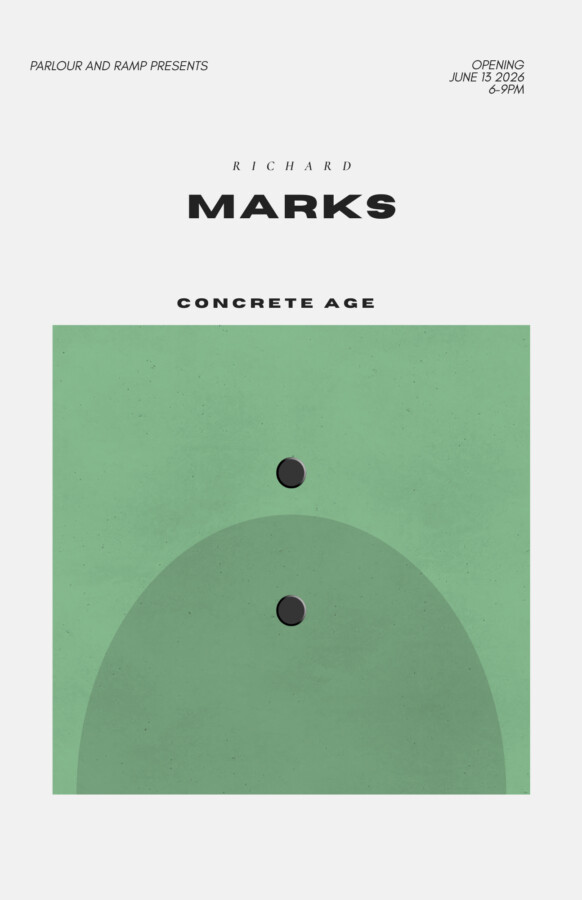

Concrete Age
Concrete Age
A solo show exhibiting the work of Richard Marks.
OPENING: Saturday | June 13th, 2026 | 6-9 pm
Artist Biography
Richard Marks is an Industrial Designer and Artist as well as a 1976 graduate of University of Illinois Chicago (UIC) College of Architecture and Art with a Bachelor’s degree in Industrial Design. In 1979 started Richard Marks studied Industrial Design which was followed in 1983 with production of precast concrete furniture that evolved into Concrete Age Artworks Inc. Since its beginning, Marks’ products expanded to include concrete countertops, fireplace surrounds, tables, sinks, soaking tubs, and art objects, and more.
Join us for the opening reception, Saturday, June 13th, 6-9pm.